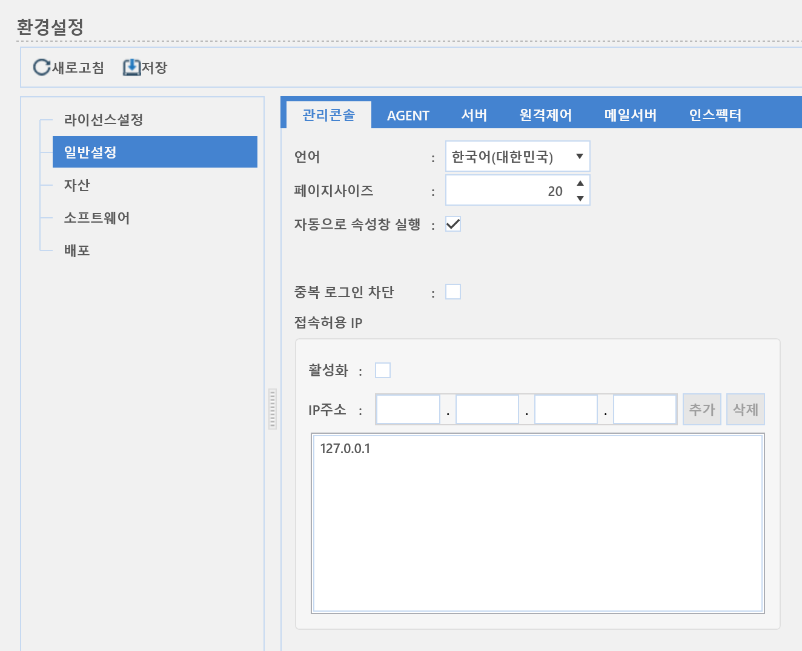

2-1-2-1. 관리콘솔
2-1-2-1. 관리콘솔
Source: https://www.sweeper.or.kr/etc/manual/2121.html
2-1-2-1. 관리콘솔
2. 홈 ›› 2-1. 환경설정 ›› 2-1-2. 일반설정 ››


관리콘솔에서 사용될 언어에 대한 설정을 합니다.

언어 : 콘솔 화면에 표시되는 메뉴, 버튼등에 표시되는 글자의 언어를 변경할 수 있습니다. (현재는 한국어만 지원합니다.)
페이지사이즈 : 콘솔 화면에 표시되는 페이지 사이즈를 변경할 수 있습니다.
자동으로 속성창 실행 : 콘솔 우측에 장비상세속성창을 자동으로 표시합니다.
중복 로그인 차단 : 서로 다른 위치에서 중복 관리자계정 로그인을 차단합니다.
접속허용IP :
- 활성화 : 접속 허용한 IP만 콘솔 접속할 수 있습니다.
- IP주소 : 접속 허용할 IP를 지정합니다.
© Copyright SWeeper Inc.. All Rights Reserved